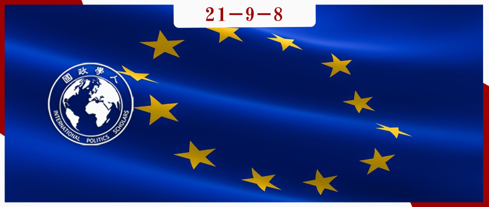

收录于合集 #区域国别 9个

作品简介
作者： 凯伦·史密斯（Karen E. Smith），伦敦政治经济学院国际关系教授、主任，主要研究领域是欧盟的国际关系、欧盟对“道德”外交政策目标的追求以及欧盟与联合国的关系，撰写了大量关于欧盟共同外交政策制定和实施的文章,近年来专注于研究其他政治和区域集团在联合国外交中的作用。
编译： 李月云（国政学人编译员，中国人民大学外交学专业）
来源： Karen E Smith, Emotions and EU foreign policy, International Affairs , Volume 97, Issue 2, March 2021, Pages 287–304,
https://doi.org/10.1093/ia/iiaa218
归档： 《国际关系前沿》2021年第9期，总第36期。

内容提要
本文探寻了外交政策分析的新方向，研究情感在外交决策中的作用，聚焦于欧盟的外交决策，从而丰富对于欧盟外交决策的理解。为了说明将情感纳入欧盟外交政策分析的重要意义，作者使用了关于欧盟外交决策的两个具体例子：2014年乌克兰危机和2017年缅甸对待少数民族罗兴亚人的案例。
文章导读
本文共有四个部分： 第一部分 介绍了外交政策分析中的“情感转向”。 第二部分 认为，关注情绪在决策过程中的作用，特别是通过利用群体间情绪理论，可以支持有关欧盟外交决策的建构主义论点。通过分析2017年乌克兰东部MH17航班坠毁事件中，可以说明情绪在欧盟决策过程中所起的作用。 第三部分 审视了欧盟在2014年乌克兰危机和缅甸罗辛亚少数民族案件背景下的“情感外交”，认为存在“情感- 行动”差距，欧盟在对这些案件的共同声明中表达的情感没有得到相应的适当行动的配合。在 结论部分 ，作者评估了这些论点对我们理解欧盟外交决策的影响，并提出了一些可在进一步研究中探讨的其他问题。
01
国际关系和外交政策分析中的
“情绪转向”
国际关系的情感转向指的是越来越多的文献关注情感在世界政治中的作用。尽管情感在国际关系领域或许一直被忽视，但在研究心理在外交决策中的作用上，外交政策分析却有着悠久的历史。传统观点认为“认知偏见和情感只会导致错误”，但现在人们认为“情感可以促进理性行为”。
研究国际关系和外交政策分析中的情感因素，学者必须应对定义和方法论的挑战。情绪是复杂的，关于什么是情绪有相当多的争论。爱德华多·贝里卡特（Eduardo Bericat）区分了初级情绪和次级情绪，初级情绪是普遍的、生理的、生物学的和神经天生的,包括恐惧、愤怒、沮丧、满足和惊讶；次要情绪受社会和文化的影响，包括内疚、羞耻、爱、怨恨、失望和怀旧。
此外，学者面临的一个关键挑战是“如何将个人情绪变成集体和政治情绪的过程理论化”。群体层面的情绪不同于个人层面的情绪：前者在群体内部共享，激励、调节群体内和群体间的态度和行为。为了分析情绪是如何在国家层面运作的，我们应该把情绪看作是政治行为的动力。情感外交理论认为，情感是国家内部决策的结果，是外交政策制定的执行阶段。情感外交是外交政策行为体战略性地利用特定的情感来影响其他行为体的看法和行为，达到预期目的。当国家行为体想要构建问题、维护或改变国家形象、改变特定关系的性质时，他们会使用情感外交。国家官员和外交官必须表现出强制性的情绪，以此作为其职业角色的一部分。情感外交下可分为三种类型: 愤怒外交、同情外交和负罪感外交。
研究方法上，对情绪的研究同样面临挑战。情绪不能被量化，也不容易衡量，摆脱这种困境的一个方法就是研究情绪作为表达和交流的方式。本文接下来的两个部分将外交政策分析的情感转向延伸到对欧盟外交政策的分析，着重探讨情感在欧盟决策过程中的作用和欧盟在多大程度上实施了情感外交。因此，本文涉及欧盟层面外交政策的决策和执行阶段。
02
情绪与欧盟外交决策
欧盟的外交决策过程往往被描述为一个理性的过程，欧盟外交政策制定的过程是复杂和多层次的，决策形成和决策制定出现在多个论坛，有多个行为者。
群际情绪理论可能有助于解释欧盟决策群体内的参与者如何作为一个“内群体”感受情绪。群际情绪是当个体认同某一社会群体, 群体成为自我的一部分时, 个体对内群体和外群体的情绪体验。欧盟成员国的社会化产生了协调反应、对共同利益的感知以及成员国代表之间集体认同的增长。这种集体认同产生了内群体，其中个人自我认同为欧盟决策群体的成员，对群体的认同可以决定情绪反应和行为，对外群体的愤怒会增加内群体对抗、攻击或伤害外群体的欲望。换言之，情绪可能会影响欧盟的外交决策。
为了探讨情绪可能影响欧盟决策的可能性，本文研究了欧盟对2014年7月乌克兰东部上空MH17航班坠毁这一危机的反应。MH17客机的坠毁是欧盟有史以来面临的最严重的外交政策危机之一，对欧洲安全与稳定以及欧盟国家间合作、和平和尊重国际法的核心价值观构成重大威胁。从2014年初开始，欧洲理事会和外交事务委员会就乌克兰危机进行了最高级别的讨论并作出决定。欧盟对危机的反应是在群体间情绪理论可以应用的背景下决定的：先是一个群体内（欧洲理事会和外交事务委员会成员），然后是一个事件（MH17航班被击落），能够触发对外群体（俄罗斯）的情绪反应。
在俄罗斯干预东乌克兰并于3月吞并克里米亚几个月后，MH17于2014年7月17日被击落。这架飞机在乌克兰东部上空被击落，该地区当时由亲俄民兵部队控制。机上共有298人，其中193人是荷兰公民，另有18人是比利时、德国和联合王国公民。其后，亲俄叛军拒绝让欧洲安全与合作组织的监督员自由进入该地点，有报道称该地点被篡改，尸体被错误处理。此外，俄罗斯媒体还推出了“十多个复杂而可笑的解释（对坠机事件）”。鉴于大量欧盟公民的死亡，欧盟成为讨论应对措施的外交场所。悲剧发生的前一天，对于俄罗斯干预乌克兰内政一事，欧洲理事会同意延长对俄罗斯的制裁；7月22日，外交事务委员会同意加快实施并加强这些制裁。
关注情绪可以让我们进一步解释为什么欧盟成员国认为有必要对击落MH17作出反应。这是因为情绪强化了欧盟“内群体”的认知，而俄罗斯则是“外群体”。对欧盟外交决策者官方声明的回顾揭示了群体间理论的关键方面：对内群体的强烈认同、对事件的共同情绪反应以及针对外群体的情绪以行动为后盾。这些声明表达了对MH17坠机事件的震惊、愤怒和悲伤，并显示了内群体对俄罗斯的强烈不满。在MH17被击落后，欧盟成员国外交部长、国家元首或政府首脑所表达的情绪强化了反对俄罗斯的立场。乌克兰危机说明了关注情绪在欧盟内部外交决策过程中作用的潜在价值。在制定欧盟外交政策的过程中，包括在其他危机情况下，情感的作用有很大的研究空间。此外，应注意单个成员国政府（或其代表）的情绪如何以及为什么会影响欧盟层面的外交决策。
03
情感在欧盟外交政策沟通中的表现
调查情绪在欧盟外交政策中可能扮演的角色的另一途径是观察通过书面和口头声明宣布的欧盟外交政策决定的执行情况。本文的这一部分将通过两种情绪类型——愤怒和同情——来考察欧盟外交政策沟通中的情绪表现。 同情外交 是针对其他国家遭受了可感知的悲剧而进行的，国家行为体通过表示慰问和提供支持以及向受害者提供援助的行动来表达同情。同情外交可以战略性地重塑与其他行为体的关系，同时也可以看作是特别沮丧情况下的自然、适当的反应。 愤怒外交 表现在三种类型的行为指标上：话语（明确表示气愤、愤慨、愤怒的陈述）、表现力（官员明显表现出愤怒）和实质性（惩罚性行动）。当国际规范被打破时，愤怒外交应该是显而易见的。如果我们违反了规范，我们应该感到尴尬、羞耻或内疚，而规范遵守者应该感到生气或愤怒。欧盟一直被视为规范或道德的外交政策行动者，这一身份充满了积极的情感底蕴。这里用两个例子来探讨情感在欧盟外交政策中的表现：第一，欧盟对2014年2月和3月乌克兰危机的最初反应；第二，欧盟对2017年8月至2018年2月期间将罗兴亚人驱逐出缅甸若开邦的初步反应。
通过使用 “情感话语分析”，我们对代表欧盟或欧盟官员发布的声明、推特和其他通信进行审查，发现在2014年2月至3月（乌克兰）和2017年8月至2018年2月（缅甸）之间的75份欧盟通信中，对直接涉及情感的名词或动词，具有情感内涵的词语或短语以及放大情感强度的副词或形容词进行了搜索。下面引用的摘录中以粗体突出显示了76个此类词语。
1.乌克兰危机
欧盟对2月暴力事件、俄罗斯干预乌克兰并吞并克里米亚的反应表明了对俄罗斯的愤怒，以及对暴力受害者的同情。这可以从连续使用强烈的形容词或副词，以及重复使用表示对形势有严肃看法的术语（如“严重”、“危机”和“紧急”）中看出。2月20日，外交理事会用强硬的语言谴责迈丹广场的暴力行为，并对暴力受害者表示同情：
欧洲联盟对乌克兰不断恶化的局势感到 震惊 ，并 深感不安 。任何情况都不能证明我们目前所目睹的镇压是正当的。我们 强烈谴责 一切使用暴力的行为。 我们对那些失去生命的人的家人和受伤的人表示关切 。
两周后，欧盟外交事务委员会对俄干预表示谴责，同时也对乌克兰新政府表示同情：
欧盟 强烈谴责 俄罗斯武装部队的 侵略行为 ，这 明显侵犯 乌克兰的主权和领土完整、 违反了 《联合国宪章》和欧安组织《赫尔辛基最后文件》。欧盟呼吁俄罗斯 立即 将其武装部队撤回其永久驻扎地区。欧盟 赞扬 乌克兰迄今所表现出的审慎反应。
愤怒和同情的外交伴随着对俄罗斯的制裁，以及向乌克兰提供援助和深度全面的自由贸易协定。因此，欧盟确实对违反各种国际规范表示了愤怒，并认为存在一条“红线”，如果越过这条红线，将引起强烈反应。
2.罗兴亚人
2017年，经过几十年的独裁军事统治，缅甸开始向民主过渡。2015年，政府与一些族裔群体达成停火协议，承诺结束暴力和暴行。然而，若开邦的罗兴亚少数民族不被视为缅甸公民，经常发生社区间暴力，人权状况岌岌可危。2017年8月，一个罗兴亚武装团体袭击了警察哨所。缅甸武装部队进行了种族清洗。在接下来的几个月里，近70万罗兴亚人逃离缅甸，大部分越过边境进入孟加拉国。
欧盟一直支持缅甸向民主过渡，取消了1990年代实施的制裁，并对其民主改革给予支持。欧盟不愿通过“点名羞辱”来破坏新政府，这种反应主要是同情外交，尽管表现出了对缅甸进行种族清洗的愤怒，但欧盟几乎没有采取任何实质性行动。
欧盟官员和欧盟本身的几次通信表明了对正在发生的侵犯人权行为的愤怒；其中大多数是针对缅甸军方和地方民兵的，一些是针对缅甸政府的；有时，没有任何行为人被认定负有责任。2017年10月16日，欧盟外交事务委员会表示：
报告称，有纵火和针对人民的暴力行为以及严重侵犯人权行为，包括不分青红皂白地发射武器、地雷以及性暴力和基于性别的暴力正在持续发烧，这令人感到 深切担忧 。这些行为是 不可接受 的，必须 立即 结束。
可以看出，欧盟的愤怒外交在目标上有些模糊，也没有采取实质性措施，因此没有给出明确的信号表明红线已经越过。此外，欧盟也开展了同情外交。2017年12月12日，在对欧洲议会的演讲中，欧盟高级代表费德里卡·莫格里尼（Federica Mogherini）以她最近访问孟加拉国难民营的感人描述开场：
让我印象最深的是跟我我小女儿年纪差不多的6、7岁的 儿童 的数量，他们要照顾 更小的孩子 ——2岁或3岁……很难想象那是什么感觉。这些孩子被迫长大，他们被剥夺了 童年 的权利，这将伴随他们的余生。
在表达同情的同时，欧盟还承诺提供更多的人道主义援助，并保证确保难民尽快返回家园，尽管这并没有解决难民外流的根本原因。欧盟参与同情外交似乎是显而易见的，但这样做实则是为了重新设定与另一行为体的关系（欧盟- 孟加拉国），而不是表面上为形势要求所做的适当反应。
欧盟在乌克兰危机和罗兴亚难民这两个事件中的反应表明，欧盟正在进行同情和愤怒外交，但却在努力将其情绪化的言辞与行动相匹配。欧盟是一个由规则定义的机构，它展现了一个深深依附于法治的国际行动者的形象，关注欧盟的情感外交揭示了“情感- 行动差距”的存在：它所表现的情感可能符合规范行为者的形象，但这种情绪化的言辞缺乏实质性的支持，这让人们对这一形象产生了怀疑。
04
结论和有待进一步研究的问题
本文阐述了外交政策分析的新方向——关注情绪在进一步洞察欧盟外交政策的制定和实施方面的效用。尽管欧盟决策经常被描述为“去戏剧性化”，但其实情绪会影响欧盟外交政策决策过程和结果，特别是在危机期间。然而，关注欧盟外交政策沟通中情感的外部表现可能会揭示出欧盟作为外交政策参与者的一些局限性，即“情感- 行动”差距。欧盟作为一个规范、道德的国际行为体，其充满情感的身份无法与适当的行动相匹配。进一步的研究可以关注可用于调查欧盟的情感外交的其他方法，包括欧盟和成员国官员在新闻发布会上解读面部表情，以及访问难民营等重要地点。
译者评述
语言和情感相互作用,密不可分。外交话语作为一种特殊的语言形式同样具有情感和温度。文章从外交政策分析领域的情感转向这一大背景出发，援引心理学的群际情绪理论，将心理学与外交学相结合，运用基于词向量的文本情感分析方法,具体分析乌克兰危机和缅甸的民主过渡中的具体案例，对比分析两个案例中欧盟的外交话语，将其进行情感外交作出愤怒外交和同情外交的归类，并得出情绪影响欧盟外交决策，欧盟作为外交政策参与者存在“情绪- 行动差距”的局限性这两个结论，并进一步展望了未来欧盟情感外交的研究方向。
词汇积累
初级情绪和次级情绪
primary and secondary emotions
群际情绪理论
intergroup emotions theory
内群体 in-group
外群体 out-group
愤怒外交 the diplomacy of anger
同情外交 the diplomacy of sympathy
责编 | 程朵依 姚寰宇
排版 | 陈力天 陈炜昊
文章观点不代表本平台观点，本平台评译分享的文章均出于专业学习之用, 不以任何盈利为目的，内容主要呈现对原文的介绍，原文内容请通过各高校购买的数据库自行下载。

国政学人
支持学术公益与知识传播
微信扫一扫赞赏作者 __赞赏
已喜欢，对作者说句悄悄话
取消 __
发送给作者
发送
最多40字，当前共字
上一页 1/3 下一页
长按二维码向我转账
支持学术公益与知识传播
受苹果公司新规定影响，微信 iOS 版的赞赏功能被关闭，可通过二维码转账支持公众号。